Live demo
Click the animation for the full-quality video (mp4).
The web console drives the real in-process libraries and the demo binaries; nothing on screen is mocked. See how to run and re-record it.
Screenshots

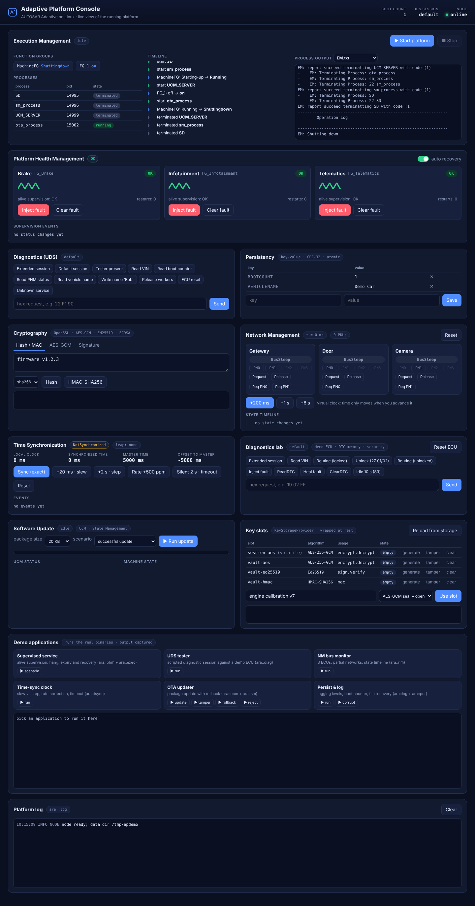

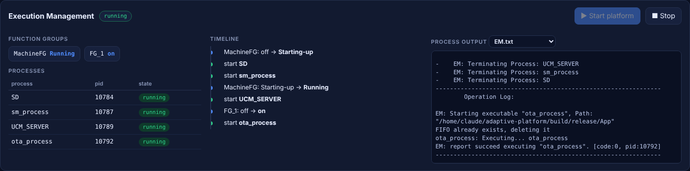

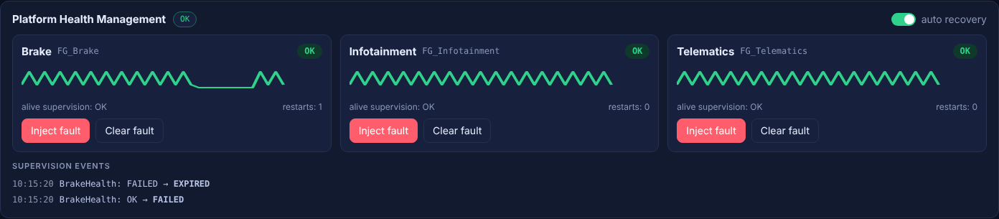

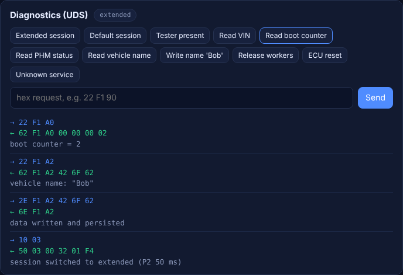

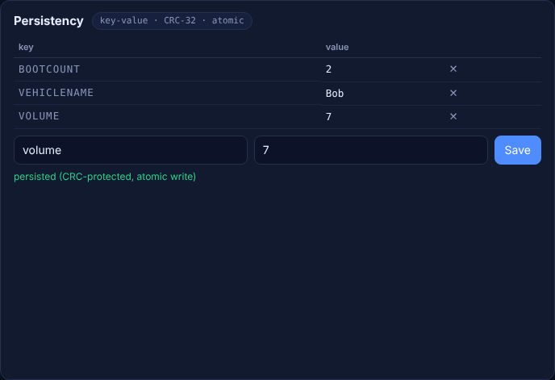

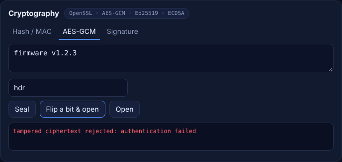

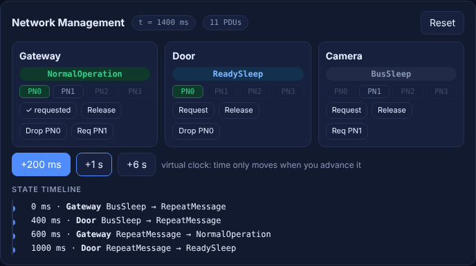

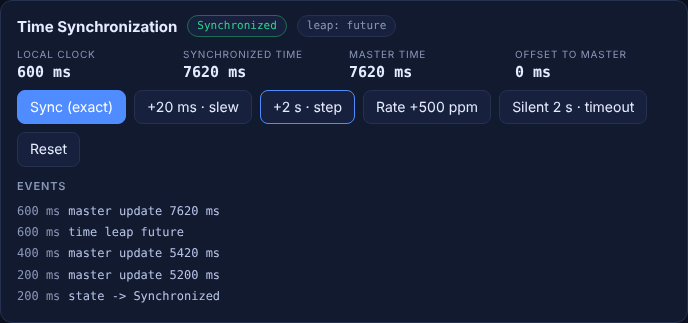

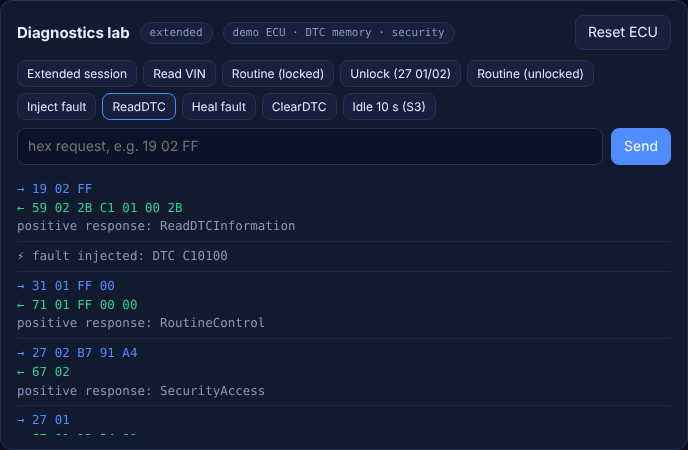

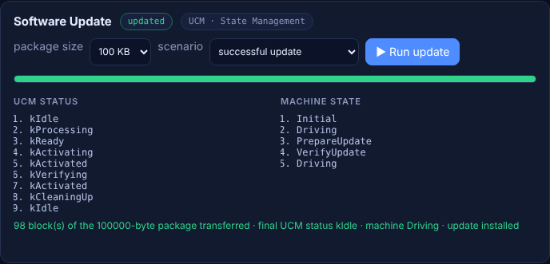

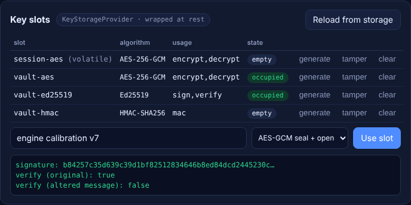

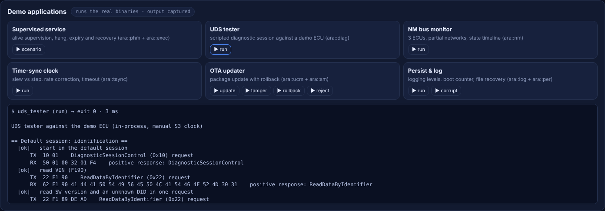
Specification conformance
Per-requirement reports against AUTOSAR Adaptive Platform R25-11, falling back to the closest earlier release where a chapter was unavailable (the release is recorded per requirement). Unverified means the specification text for that item could not be read; it is not a claim of compliance.
| Cluster | Implemented | Partial | Missing | Deviation | Unverified |
|---|---|---|---|---|---|
ara::com | 12 | 7 | 7 | 9 | 1 |
ara::core | 15 | 0 | 1 | 8 | 2 |
ara::crypto | 11 | 9 | 2 | 0 | 1 |
ara::diag | 20 | 8 | 1 | 0 | 0 |
ara::exec | 6 | 4 | 1 | 0 | 1 |
ara::log | 23 | 2 | 3 | 0 | 1 |
ara::nm | 46 | 1 | 0 | 1 | 2 |
ara::per | 21 | 5 | 0 | 1 | 3 |
ara::phm | 10 | 5 | 0 | 3 | 0 |
ara::sm | 10 | 7 | 12 | 5 | 1 |
ara::tsync | 31 | 2 | 1 | 3 | 1 |
ara::ucm | 11 | 13 | 5 | 2 | 2 |
Guides
Demo: the Platform Console and the demo applications · Adaptive Platform Console · Roadmap and gap analysis · ara::nm - Network Management · ara::tsync – Time Synchronization · Crypto key slots
API reference
Doxygen documentation generated from the sources on every push to master.